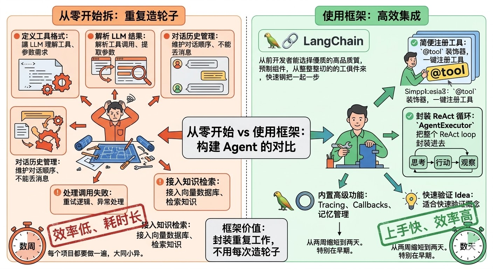
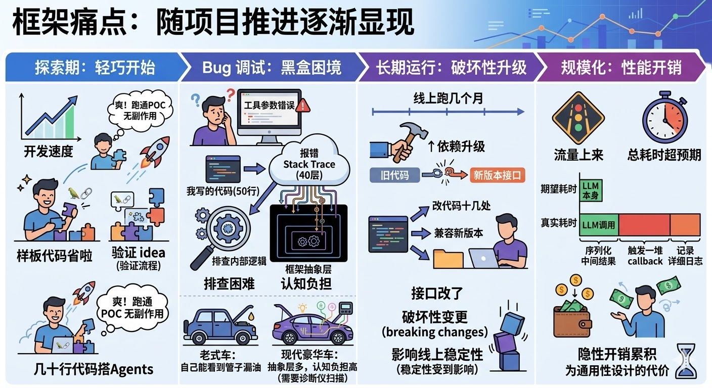
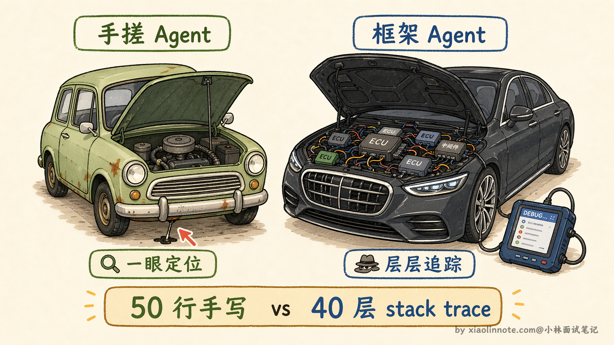
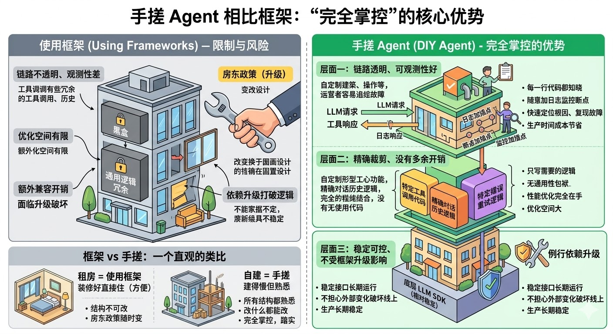
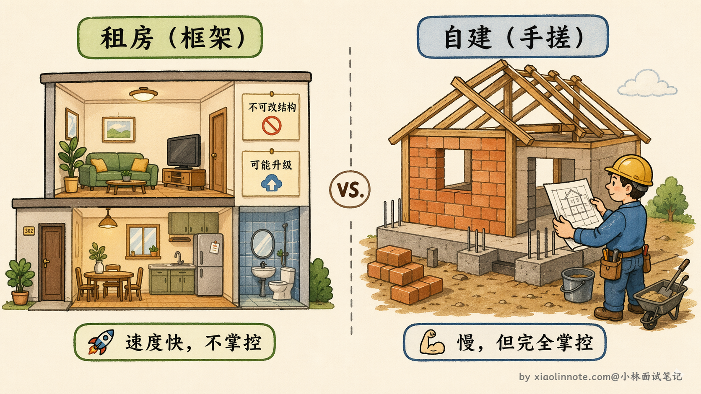
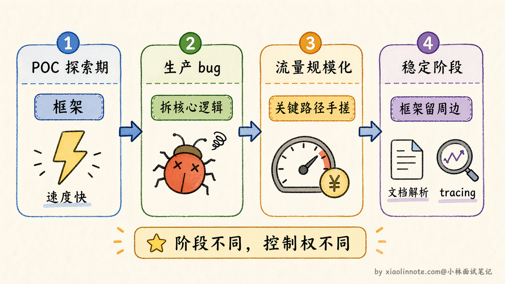
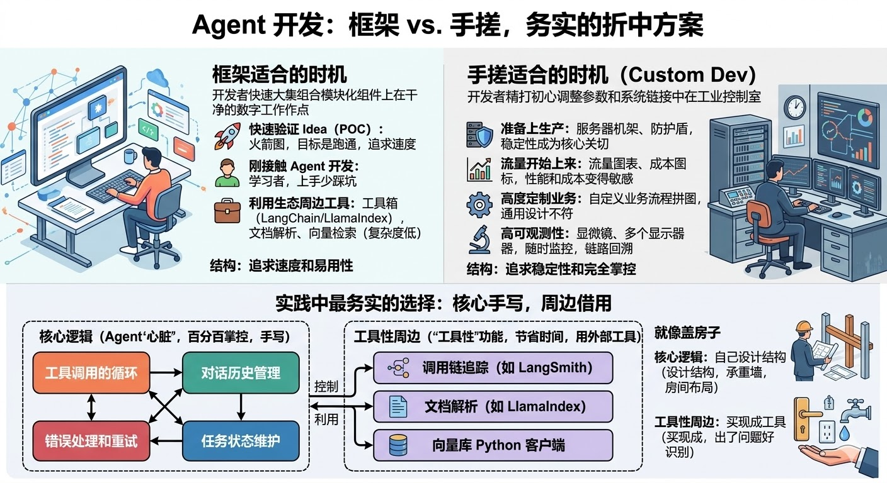
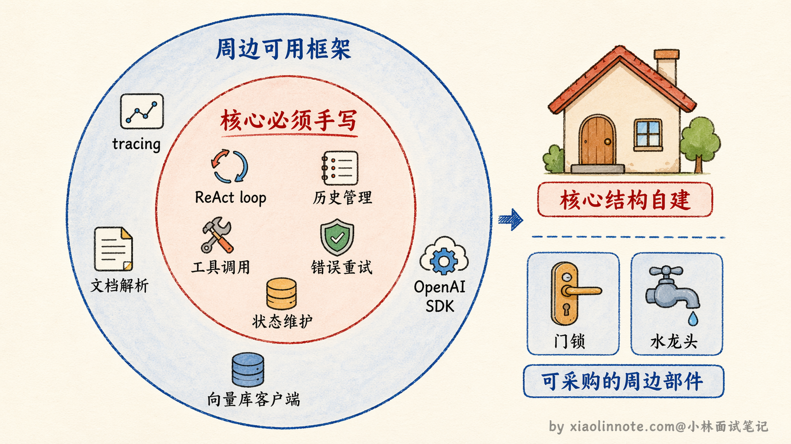
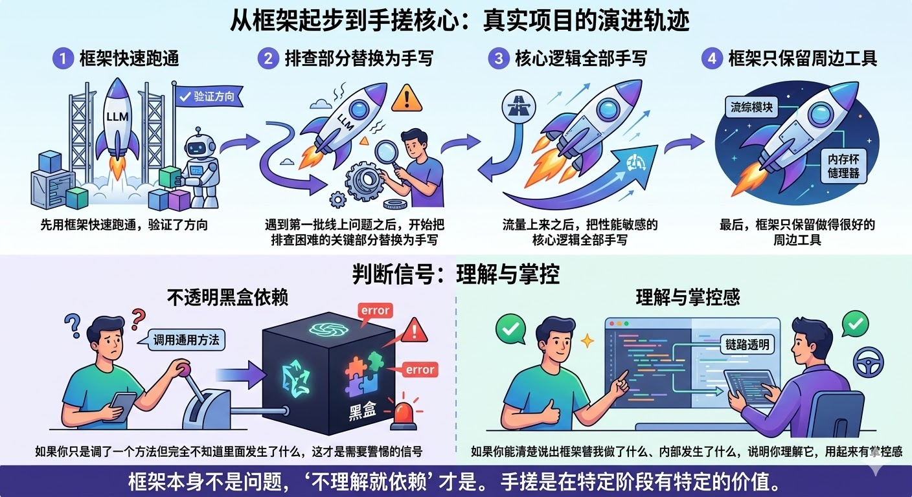

13. 在工程实践中，为什么有时候选择「手搓」Agent，而不是直接用成熟框架？
👔面试官：你平时做 Agent 开发用什么框架？
🙋♂️我：主要用 LangChain，功能很全，上手快，工具注册、ReAct loop、记忆管理都帮你封装好了，开发效率高很多。
👔面试官：那如果线上出了 bug，你怎么排查？
🙋♂️我：看报错日志，根据 stack trace 往上追，一层层找原因。
👔面试官：LangChain 的 stack trace 动不动四五十层，你真的能靠这个快速定位吗？你有没有想过，框架的抽象层本身就是排查问题的障碍？
🙋♂️我：……那我可以用 LangSmith 做 tracing，可观测性问题框架自己有方案。
👔面试官：LangSmith 确实能帮你追踪调用链，但它解决不了框架升级带来的 breaking change 和隐性性能开销。你说说，什么场景下框架的通用性设计反而成了你的负担？
好，被问到这里，只知道「框架好用」是不够的。这道题真正想考的，是你有没有想清楚框架和手搓各自的边界在哪里。
💡 简要回答
我的感受是框架用起来快，但有几个实际痛点。
第一是抽象层太多，调试的时候不知道哪步出了问题，得一层层往下扒；第二是版本升级经常有破坏性变更，线上稳定性难保证；第三是框架的通用设计往往和具体业务需求有偏差，定制起来反而更费劲。
手搓的代码完全在自己掌控之内，可观测性好、出问题好排查，也更方便做性能优化。所以我现在的策略是核心逻辑手写，只在边缘功能上用框架的工具。
📝 详细解析
想象一下，你从零开始搭一个 Agent。
你需要定义工具的格式，让 LLM 能正确理解每个工具是什么、需要哪些参数；你需要解析 LLM 返回的工具调用结果；你需要在每次调用之间正确维护对话历史，不能丢消息也不能顺序错；你需要处理工具调用失败时的重试逻辑；你可能还需要接入向量数据库做知识检索……这些事情，每一个 Agent 项目都得做一遍，而且大同小异。
框架的价值就在这里：把上面这些重复工作全部封装好，你直接用，不用每次都造轮子。

LangChain 里一个 @tool 装饰器就能注册工具，AgentExecutor 把整个 ReAct loop 封装进去（注意：AgentExecutor 在新版 LangChain 中已被废弃，官方推荐迁移到 LangGraph，这恰好印证了后面要说的框架升级痛点），还内置了 tracing、callback、记忆管理。早期上手快是真实的优势，两周的工作缩短到两天，特别是在快速验证 idea 的阶段，框架几乎没有明显的副作用。
痛点在什么时候开始出现？
框架的问题不是一开始就暴露的，而是随着项目推进，在不同阶段逐渐浮出来的。
探索期，框架真的很爽。你在做 POC，目标只是把流程跑通，几乎感受不到任何副作用。LangChain 帮你省掉了大量样板代码，几十行就搭起一个能用的 Agent，心情很好。

第一个奇怪的 bug 出现之后，感觉就变了。Agent 在某个特定场景下输出了错误的工具参数，你开始排查。代码只有五十行，但报错的 stack trace 有四十层，往下追到了框架内部。
你不知道问题出在你写的那五十行里，还是框架某个版本的逻辑变化，或者是 callback 触发时机的问题。你开始在 GitHub issue 里搜，或者一层层读框架源码。
类比一下：老式车出了问题，打开引擎盖自己就能看到哪根管子漏油；现代豪华车出了问题，你打开引擎盖看到的是一堆你看不懂的电子设备，只能去 4S 店让诊断仪扫。框架的抽象层太多，排查问题需要穿透那些你没写、也不完全懂的层，这是实实在在的认知负担。

版本升级踩坑，是另一个阶段的痛苦。线上跑了几个月，某次依赖升级，LangChain 改了接口，代码直接报错。你要么回滚，要么把代码改到兼容新版本，可能涉及十几处修改。
LangChain 早期版本升级频率很高，breaking change 是常见的（后来 LangChain 采用了语义化版本控制 semver，版本稳定性已有改善，但早期的教训让很多团队对框架依赖保持了警惕）。把核心业务逻辑建立在第三方框架上，线上稳定性就会受到这种不确定性的影响。
性能优化时发现了隐性开销，是到了规模化阶段才会碰到的问题。你开始关心 Agent 的调用延迟，发现某步 LLM 调用本身很快，但总耗时超预期。
仔细 profile 之后，发现框架内部在每次调用时做了你根本不需要的事：序列化中间结果、触发一堆 callback、记录详细日志……这些逻辑是框架为了通用性设计进去的，对你的具体场景没有用，但每次调用都在跑。高流量下这些隐性开销累积起来，变成真实可见的延迟增加和费用浪费。
手搓的本质优势：完全掌控
说清楚框架的痛点之后，手搓的价值就容易理解了。它的核心优势，就是「完全掌控」三个字。

首先是链路透明、可观测性好。手搓的每一行代码你都知道在干什么，可以在任意位置加日志、打断点、插入监控，没有任何黑盒。线上出了问题，靠日志复现故障是最快的方式，链路越清晰，定位根因越快。这在生产环境里，是真实的时间和成本节省。
其次是精确裁剪、没有多余开销。你只写你确实需要的逻辑，不带任何通用性包袱。工具调用、对话历史维护、错误重试，每一块都按照你的具体场景来实现，没有为了「兼容其他用法」而存在的冗余逻辑。在性能敏感的场景里，这意味着优化空间完全在自己手里，不用绕过框架的限制来做裁剪。
第三是稳定可控、不受框架升级影响。你自己写的接口不会突然变，没有来自外部的 breaking change。依赖只有底层的 LLM SDK，相对稳定，生产环境可以长期运行，不用担心某次例行的依赖升级把线上跑坏。
其实这个观点不只是个人经验，Anthropic 在官方的 Agent 构建指南里也明确提了类似的建议：不要一上来就用框架，先用最少的抽象把核心逻辑跑通。他们的原话大意是「框架的抽象层会让你离底层更远，一旦出了问题，调试成本比你省下的开发时间还高」。这和我们在实际项目里的感受完全一致，框架帮你快速搭起来的东西，往往也是后期最难排查的东西。
有一个类比能很好地概括这个区别：框架是「租房」，装修好直接住，方便，但结构改不了，房东随时可能调整政策；手搓是「自建」，建起来慢，但所有结构都熟悉，改什么都能改，住着踏实。框架给你省了搭建时间，但你对这个「房子」的控制权始终有限。

同一个需求，框架写 vs 手搓写，差别在哪？
光说理论可能还不够直观，我们拿一个最常见的场景来对比：实现一个带工具调用的 Agent loop。
用 LangChain 框架来写，大概是这样的：
from langchain.agents import AgentExecutor, create_openai_tools_agent
# 框架封装好了 Agent loop，一行搞定
agent = create_openai_tools_agent(llm, tools, prompt)
executor = AgentExecutor(agent=agent, tools=tools)
# 整个 ReAct 循环、工具调用、消息维护，全在 executor 内部
result = executor.invoke({"input": "帮我查一下今天的天气"})代码确实简洁，三四行就跑起来了。但问题是，当你想知道「这次调用里 LLM 返回了什么、工具是怎么被选中的、消息列表是什么顺序」的时候，你得去读 AgentExecutor 的源码，它内部的调用链可能有十几层。
手搓同样的功能，代码量多一些，但每一步都在你眼前：
messages = [{"role": "system", "content": system_prompt}]
messages.append({"role": "user", "content": user_input})
for i in range(max_turns): # 手动控制最大轮次
# 调用 LLM，拿到响应
response = client.chat.completions.create(
model="gpt-4", messages=messages, tools=tool_schemas
)
msg = response.choices[0].message
messages.append(msg) # 把 LLM 响应加入对话历史
# 如果没有工具调用，说明 LLM 认为任务完成了
if not msg.tool_calls:
break
# 有工具调用，逐个执行并把结果写回消息列表
for tc in msg.tool_calls:
result = execute_tool(tc.function.name, tc.function.arguments)
messages.append({
"role": "tool",
"tool_call_id": tc.id,
"content": result
})
# 这里可以随意加日志、监控、重试逻辑
logger.info(f"工具 {tc.function.name} 返回: {result}")你看，手搓版本里，消息列表怎么拼的、工具怎么选的、循环什么时候退出，每一个细节都摆在明面上。出了问题，你看这二十行代码就够了，不用去翻框架源码。这就是「完全掌控」的具体含义，不是说框架不好，而是当你需要理解和调试每一个环节时，手搓版本给你的确定性是框架给不了的。
什么时候用框架，什么时候手搓？
这不是非此即彼的选择，判断的关键是项目所处的阶段和对控制权的需求。

框架适合的时机：POC 阶段快速验证 idea，目标是跑通而不是优化；团队刚接触 Agent 开发，用框架能少踩一些基础性的坑；周边工具（文档解析、向量检索）依赖框架的生态，核心逻辑本身复杂度不高。这些场景里，框架带来的速度优势是真实的，值得用。
手搓的时机：准备上生产，稳定性成为核心关切；流量开始上来，性能和成本变得敏感；业务逻辑高度定制，和框架的通用设计偏差很大，改起来反而麻烦；团队需要高可观测性，链路要能随时监控和回溯。

折中方案：核心手写，周边借用
实践中最常见也最务实的选择，是介于两者之间的折中：核心逻辑手写，周边工具性功能借用框架。
控制边界的逻辑是这样的：工具调用的循环、对话历史的管理、错误处理和重试、任务状态的维护，这些是 Agent 的「心脏」，直接决定系统行为，必须百分百理解、百分百掌控，所以手写。而 LangSmith 的 tracing（调用链追踪）、LlamaIndex 的文档解析、某个向量库的 Python 客户端，这些是「工具性」的周边功能，出了问题一眼就能看出来，不会带来黑盒困境，用外部工具节省时间完全值得。
就像盖房子：自己设计核心结构、承重墙在哪、房间怎么布局，你必须完全掌控；但门锁、插座面板、水龙头，完全可以买现成的，不必自己从头制造每一个零件。

工程实践的清醒视角
最后有一点值得说清楚：手搓不是「比框架更好」，而是「在特定阶段有特定的价值」。
很多真实项目的演进轨迹是这样的：先用框架快速跑通，验证了方向；遇到第一批线上问题之后，开始把排查困难的关键部分替换为手写；流量上来之后，把性能敏感的核心逻辑全部手写；最后，框架只保留做得很好的周边工具。这条路走下来，既享受了早期框架的速度，又在生产阶段拿回了掌控权。

有一个判断信号可以参考：如果你能清楚说出「框架在某个地方替我做了什么、我用的这个方法内部发生了什么」，说明你理解它，用起来有掌控感；如果你只是调了一个方法但完全不知道里面发生了什么，出了问题就是一个不透明的黑盒，这才是需要警惕的信号。框架本身不是问题，「不理解就依赖」才是。
🎯 面试总结
回顾开头的对话，踩雷的地方其实很典型：只说「框架好用、效率高」，没有说清楚框架在什么阶段开始出问题、以及为什么手搓能解决这些问题。
面试答这道题有几个要点要拿到。
第一，框架的价值是真实的，POC 阶段省时省力，不要一开口就否定框架。
第二，框架的痛点要说具体：抽象层太多导致排查困难、版本升级带来 breaking change、通用性设计产生隐性性能开销，这三个是实际生产中最常遇到的问题，泛泛说「框架有缺点」没有说服力。
第三，手搓的核心价值是「完全掌控」，可观测性好、稳定不受外部升级影响、性能可以精确裁剪，这些在生产环境里是真实的成本节省。
第四，最容易被忽略的是折中方案：核心逻辑手写，周边工具性功能借用框架，这才是实际项目里最常见也最务实的选择，面试官通常很认可这个答法。
最后要记住一句：框架不是问题，「不理解就依赖」才是。
对了，AI Agent的面试题会在「公众号@小林面试笔记题」持续更新，林友们赶紧关注起来，别错过最新干货哦！